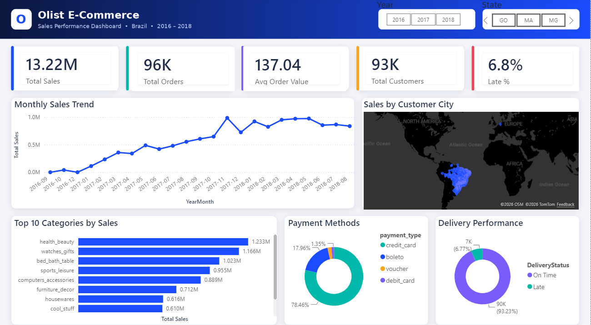
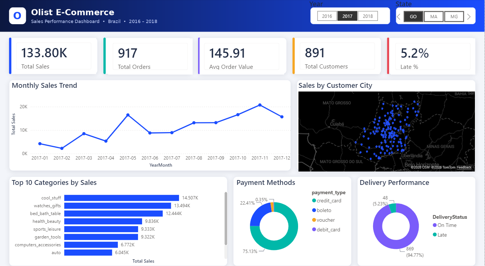

اخترت بيانات متجر Olist، وهو متجر إلكتروني برازيلي نشر بيانات حوالي 100 ألف طلب حقيقي بين 2016 و2018. البيانات مقسمة على أكثر من جدول، فكانت فرصة أتعلم فيها الربط بين الجداول بشكل واقعي. الهدف هو إبراز مهارات التحليل لدي لبيانات المبيعات.


صححت أنواع الأعمدة، وشلت المسافات الزايدة، ووحدت أسماء المدن اللي كانت مكتوبة بطريقتين، وخليت بس الطلبات اللي وصلت للعميل.
جبت الترجمة الإنجليزية لفئات المنتجات بالدمج (Merge)، وسويت جدول للولايات بالإلحاق (Append).
ربطت 8 جداول بعلاقات One to Many.
سويت عمود لأيام التوصيل، وعمود يحدد هل الطلب وصل متأخر ولا في موعده.
المبيعات، عدد الطلبات، متوسط قيمة الطلب، نسبة التأخير، نسبة العملاء المتكررين.
سويته عشان أحسب نمو المبيعات من شهر لشهر.
خليتها تفاعلية بفلاتر السنة والولاية، ولما تضغط على أي مدينة في الخريطة تتغير كل الأرقام لها.
لأن الفلتر يمشي من جدول العملاء للطلبات، مو العكس. فالعملاء اللي طلباتهم ملغية كانوا ينحسبون. حليتها بدمج Inner يخلي بس العملاء اللي عندهم طلبات واصلة.
اكتشفت إن السبب في دالة SUMMARIZE نفسها، لأنها تفلتر الجدول على نفس الشهر. فاستخدمت SUMMARIZECOLUMNS بدالها.
هذا رفع المتوسط، فحسبت الوسيط بعد عشان أطلع رقم أصدق.
إجمالي المبيعات 13.22 مليون ريال برازيلي (BRL) من 96.5 ألف طلب.
93% من الطلبات توصل في موعدها، ونص الطلبات توصل خلال 10 أيام.
97% من العملاء طلبوا مرة وحدة بس، واللي رجعوا وطلبوا مرة ثانية نسبتهم 3% بس، وهي نسبة قليلة. وهذي أكبر نقطة ضعف للمتجر، وتوصيتي برنامج ولاء أو عرض على الطلب الثاني.
أعلى نمو كان في نوفمبر 2017 بزيادة 52%، بسبب البلاك فرايدي.
فئة الساعات والهدايا طلباتها مو الأكثر، بس جات ثانية في المبيعات لأن أسعارها عالية.
78% من العملاء يدفعون بالبطاقة الائتمانية، و18% بالـ boleto. وتوصيتي:
مصدر البيانات: Brazilian E-Commerce Public Dataset by Olist — منشورة على Kaggle.